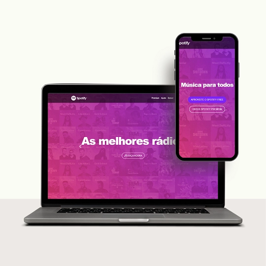
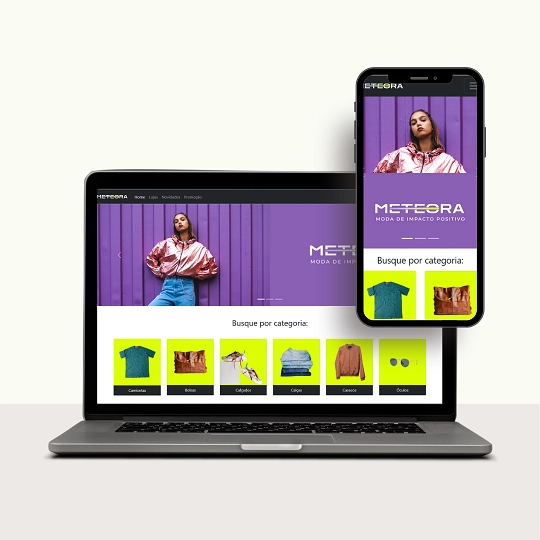
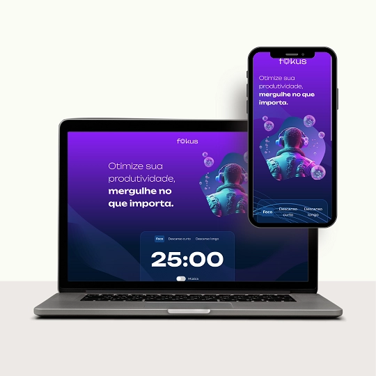
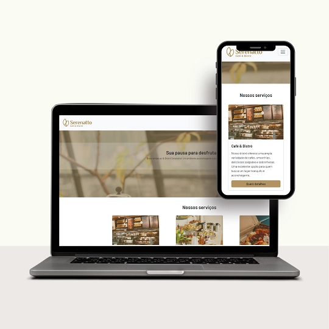
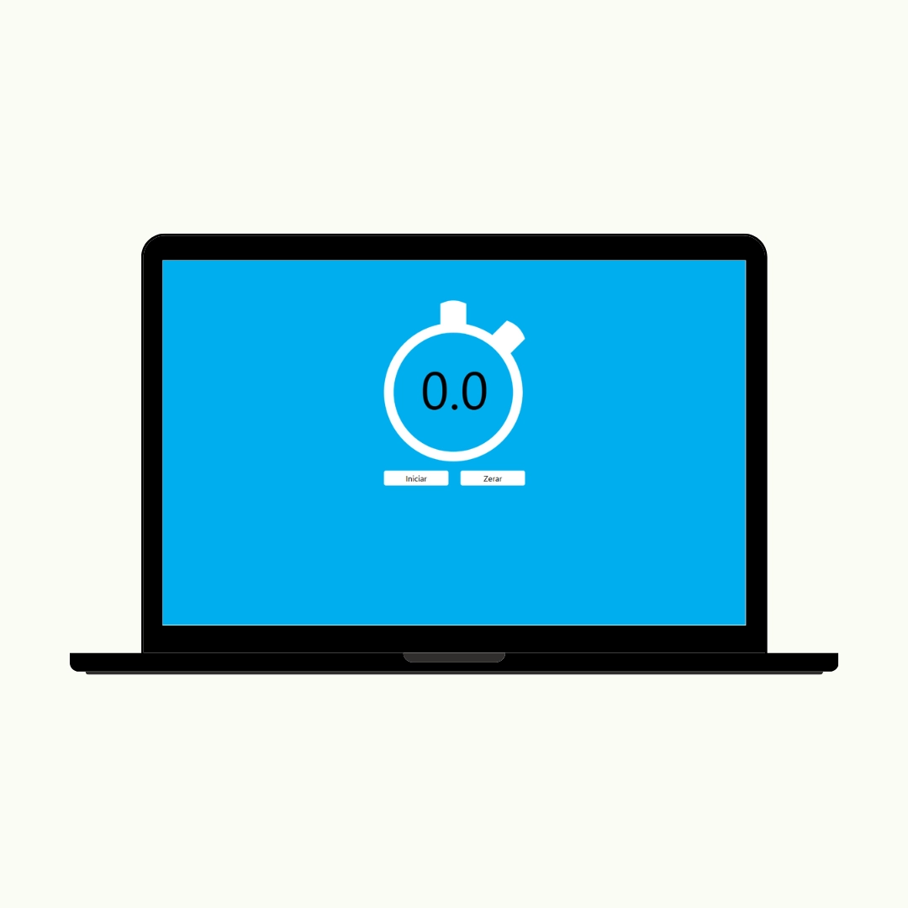
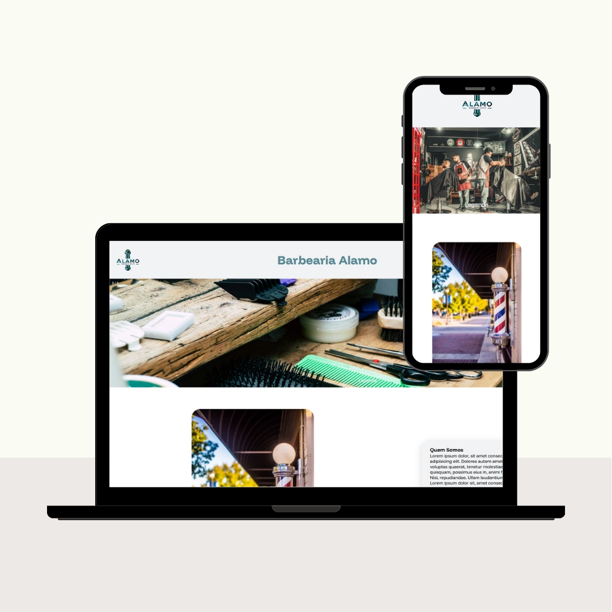

Olá, sou eu
Marcos Aleixo
E eu sou
Eu crio sites institucionais, landing pages e lojas virtuais tudo com foco em design responsivo, desempenho e funcionalidade. Entre em contato e descubra como posso tornar sua visão digital uma realidade vibrante e impactante. Seu sucesso online começa aqui!
Solicite um orçamentoQuem sou eu?
Profissional multidisciplinar com experiência nas áreas de desenvolvimento web, design gráfico e análise de dados. Possui perfil autodidata, analítico e voltado para resultados, com forte capacidade de resolver problemas técnicos de forma eficiente. Tem experiência tanto em projetos próprios quanto em ambientes corporativos, oferecendo soluções sob medida para clientes e empresas.
- Linguagens: HTML, CSS, JavaScript, PHP, Python, Java, Shellscript
- Frameworks Backend: Laravel, Express, WordPress
- Frameworks Frontend: React, NextJS
- Banco de dados: SQL Server, Oracle SQL, MySQL, MongoDB
- Libs: Bootstrap, Tailwind, jQuery, Ajax
- Controle de Versão: Git, GitHub
- Design Gráfico: Adobe Photoshop, Illustrator, InDesign, Premiere Pro, Canva, Capcut
- Análise de Dados: Excel, Power BI, Tableau
- OS: Windows e Linux
- Soft Skills: Comunicação clara, foco em soluções, autonomia, organização
Serviços que ofereço
Site Institucional
Criação de sites profissionais para empresas, autônomos e negócios locais. Totalmente responsivo, rápido e ajustável.
- ✓ Página sobre, serviços, contato
- ✓ Integração com WhatsApp e redes sociais
- ✓ Design moderno e responsivo
A partir de R$ 850
Lojas Virtuais
Desenvolvimento de sites e lojas virtuais WordPress e WooCommerce. Ideal para blogs, lojas virtuais e sistemas de fácil gerenciamento.
- ✓ Página de produtos e checkout
- ✓ Integração com formas de pagamento
- ✓ Otimização básica para SEO
A partir de R$ 1500
Sites Personalizados
Desenvolvimento de sites sob medida linguagens de programação, bibliotecas e frameworks — ideal para projetos únicos ou integrações específicas.
- ✓ Código limpo e documentado
- ✓ Estrutura otimizada para performance
- ✓ Totalmente adaptado às suas necessidades
Sob consulta
Portfólio
Confira alguns dos projetos desenvolvidos.






Entre em Contato!
Quer pedir um orçamento, tirar dúvidas ou conversar sobre seu projeto? Entre em contato através dos links abaixo: